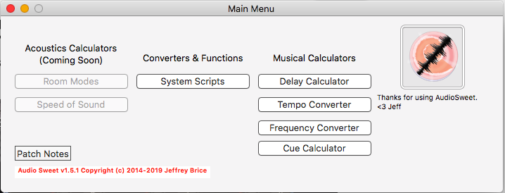

Musical Tool Suite
Audio Sweet is a suite of tools and calculators for musicians to speed up their production process.

Audio Sweet does not currently have an open source license.
Features
- Delay calculator to determine delay values in MS based on tempo and beat divisions.
- A tempo converter to determine pitch shift and time stretching values for remixing audio.
- A frequency converter to figure out midi, wavelength, frequency, and period from an note.
- A cue calculator to determine how long musical cues should be when synced to film or video.
- More to come!
Contact
 If you'd like to talk about the app or request features, send me a tweet!
If you'd like to talk about the app or request features, send me a tweet!